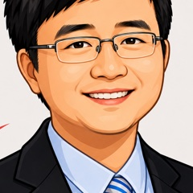
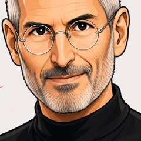
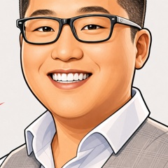
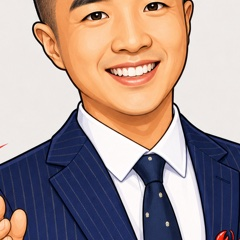

5 评委 × 5 镜头独立打分(1-10 整数)。联想各 lens σ ≤ 0.63,共识极高(亚信 σ 最大 0.75)。
总分(满分 50)。5 评委集中在 19-24,全部负面,但比亚信平均高 5 分 —— 反映联想 30 年累积资产是真的。
5×5 grid + σ 列。联想所有 σ ≤ 0.63,5 评委高度共识 —— 撕扯不在分数,在 5 个独占 critical gap + Round 2 辩论网络。
关键观察:Category coinage 联想 2.8 = 亚信 2.8 同款病 —— 自创词被业界不接受是结构性问题,跟公司体量无关。
真正做功的 4 维度 vs 装饰的 4 维度。注意:联想最强资产(ThinkPad)其实是子品牌,主品牌反成"管子"。
flowchart LR
classDef load fill:#16a34a,stroke:#0f7a35,color:#fff
classDef dec fill:#fde68a,stroke:#d4a016,color:#1a1a1a
classDef surface fill:#1a3a5c,stroke:#0f2541,color:#fff
classDef fragile fill:#dc2626,stroke:#991b1b,color:#fff
L1["全球 PC 龙头
25.5% 领先 HP 5.7pct"]:::load
L2["ThinkPad 1992
黑红 TrackPoint nub
34 年视觉资产"]:::load
L3["渠道
180 国 17000 渠道商"]:::load
L4["SSG OPM 21.1%
利润放大器"]:::load
D1["AI PC 自创词
无 IDC/Gartner traction"]:::dec
D2["Hybrid AI
借自 Qualcomm 2023-05"]:::dec
D3["Lenovo 主品牌
2015 红矩形
无产品级锚点"]:::dec
D4["ISG +63%
是市场 tide
份额仍 ~4%"]:::dec
F1{{"信创锁定
SASAC 2027 100%"}}:::fragile
F2{{"Token 计量表
在微软 + 英特尔 + NVIDIA"}}:::fragile
F3{{"2025-12 上海
15 分钟 Zoom 裁员"}}:::fragile
L1 --> S1
L2 --> S1
L3 --> S1
L4 --> S1
D1 -.AI 叙事装饰.-> S1
D2 -.借词装饰.-> S1
D3 -.主品牌空壳.-> S1
D4 -.增长率包装.-> S1
S1["可观察品牌表面
0992.HK +30% 1y / +164% 5y
16 Buy 0 Sell 但 MS+JPM 暗下调"]:::surface
L3 -.锁定.-> F1
L1 -.红利外流.-> F2
L4 -.信任裂痕.-> F3
F1 -.总装厂化.-> S1
F2 -.数据飞轮归别人.-> S1
F3 -.taste failure.-> S1
轴选取:category 定义权(被上下游夺走 ↔ 自有命名)× 叙事一致性(子主分裂 ↔ 统一)。联想红点落在左下 —— 主品牌弱,category 定义权外包。
每位评委 in-character 第一人称裁断。5 个 critical gap 完全无重叠;但 brand action 在 ThinkPad 路径上 4/5 同方向。




moral category,leading indicator of product decay 3 years out
位置问题不是品牌问题,联想是数据采集器
比亚信错配更深 —— 把定义权外包给上下游
信创 PC 总装厂只是表面;Token 计量表才是底层
比从未转移更难修复 —— 公司有"我们已会换帅"的错觉
每位评委独立打分,4 步纪律:
Round 1 完成后,评委进入 Round 2 辩论(读完彼此 review,quote + 反驳/呼应)。
5/5 score 5-7。柳传志被 de-Liu-ifying,杨元庆"创业 1.0-5.0"框架替代;但媒体口径还停在柳传志时代。
5/5 score 2-3。"AI PC" 自创无外部 traction / "Hybrid AI" 借自 Qualcomm 2023-05 / 14 年 4 换没一个撑过 5 年。
4/5 评委明确说出。服务器市场 +61% 同步,联想份额仍 ~4%(Dell 10% / Supermicro 9.5% 真赢家)。
5/5 一致。ThinkPad 1992 黑红 TrackPoint nub = 34 年视觉资产 vs Lenovo 主品牌 2015 红矩形 11 年无产品级锚点。
5/5 公认。Bloomberg/Nikkei "tops estimates" 同期中文媒体"至暗时刻 / 1.61亿薪酬";MS + JPM 从 Overweight 暗下调到 Neutral / Equal Weight(2025 H2)。
wu:"Lenovo 退到法律实体,ThinkPad 当主语 = becoming";likejia:"全押 ThinkPad 35 周年,让承重的子品牌反向定义主品牌"
Jobs:"Pick one product. Put the Lenovo (not ThinkPad) name on it";fusheng:"两个都不持久 —— 都是 PC 时代遗产,关键是 Token 计量表"
真分歧:wu+likejia 朝同方向但 likejia 在 R2 反驳 wu(主语应换成 Agent 不是 ThinkPad);Jobs 反对 wu 的 18-24 月媒体铺垫(succession 是 shipped work);fusheng 跨过这层说关键是 Token 计量表。
Round 1 是独立打分;Round 2 让评委读完彼此 review,quote 1 句最不同意 + 1 句最同意,in-character 互相回应。3 评委用 3 种语言收敛到"红利不归联想"同一深层共识。
"ThinkPad 比 Lenovo 更持久。"
不是 ThinkPad 更持久,而是两个都不持久 —— 这是李可佳没看到的破局点。ThinkPad 黑红 nub 是 1992 硬件包浆,Lenovo 红矩形是 2015 渠道刷漆,两件都是 PC 时代的遗产。AI 时代的"持久"不是子品牌反向救主品牌,是谁握着 Token 计量表。让 ThinkPad 当主语,联想还是个总装厂——只是换了个更体面的招牌。SaaS 已死,硬件铭牌也救不了。
"联想在算法时代承担了数据采集器的角色,但收割飞轮复利的不是它。"
这一句就是我 R1 写"Token 总装厂"的另一种说法 —— 一鸣的火星视角看到了同一件事。每年 7000 万台 PC + ISG 服务器进 hyperscaler,Token 都从联想这条管子流过去,但计量表在 Microsoft / Intel / NVIDIA 那边。联想干的是搬运工,赚的是搬运费;真正的红利是 Token 调用复利,18 个月内会拉开 10 倍差距。破局点很清楚:找一个具体场景把 Token 计量表抢回来。
"用 18-24 个月的叙事铺垫,让外部第三方逐渐把'联想'和某一个具体人名联系起来"
No. You don't manufacture a successor through a media calendar. That's process replacing content. A successor is a person who has shipped great products in front of you, then shipped greater ones beside you. Tim wasn't a profile in Forbes. Tim ran operations for thirteen years. The work made him obvious. If your candidate needs eighteen months of WSJ profiles to become legitimate, the candidate isn't legitimate. You're hiring a press release. Show me the products this person shipped. Boom. That's succession.
"现成的词能装下,就还没看到本质 —— 联想做了 14 年的品牌,做的是渠道,不是协议。"
He's right. If a category fits inside someone else's word, you haven't built a category. You've built a sticker. "AI PC" goes in Microsoft's drawer. "Hybrid AI" came out of Qualcomm's drawer. Lenovo is rearranging other people's drawers and calling it furniture. Marketing is about values, not specs. The fix isn't another keynote word. It's a product so insanely great the world has to invent a word for it. Until then, you're a channel.
"ThinkPad 这个 34 年子品牌资产应该被允许变成主品牌"
让 ThinkPad 反向代表公司,这条路径听起来体面,本质是把"现成词"重新刷一遍漆。ThinkPad 是 PC 时代的子品牌,主语还是人——一个坐在工位上敲字的人。联想真正放弃的不是主品牌,是协议位。把 34 年的人类工位资产升格为主叙事,等于宣布这家公司决定不再回答"屏幕另一端是谁"这个问题。子品牌能装下,就还没看到本质。
"联想在算法时代承担了数据采集器的角色,但收割飞轮复利的不是它。"
这一句把我 R1 的"协议位主动放弃"翻译成了数据语法。联想每出一台机器,行为数据回到 Copilot+,模型调用回到 OpenAI,联想拿走的是 BOM 利润 —— 把自己的 7000 万台年出货量做成了别人的训练管道。从我视角看,2026 年起设备的主语应该是 Agent,不是人;主语换了,飞轮的归属也得跟着换。联想现在不是在卖 PC,是在替别的协议层喂养它的 Agent。
"Pick one product. Make it insanely great. Put the Lenovo name on it — not ThinkPad, not Legion, not IdeaPad. Lenovo."
Steve 在这里讲的是 1997 年回 Apple 时的逻辑:产品先于品牌、垂直整合、All in 一个名字。但那时 Apple 主品牌的 inner core 还没死。Lenovo 不一样 —— 主品牌承重的那一块 34 年视觉资产,在 ThinkPad 那个红 nub 里,不在红色矩形里。we believe 让一个空壳主品牌 insanely great 是反 leverage —— 介质 × 规模那一层,ThinkPad 已累出 3 个量级,主品牌从 0 起步要再花 20 年。这不是该选哪个名字,是该承认哪个名字才是真的主语。
"停掉所有 'AI for All' / 'Hybrid AI' / 'AI PC' 的主品牌叙事预算,把这笔钱全部移到 ThinkPad 的 35 周年(2027)上"
Ethan 这一刀我接住 —— 我 R1 讲过"IP 转移做了一半中断比从未转移更难修复"。杨元庆那 23 年弧线,如果是被压在柳传志 IP 下面的"接班叙事",会一直被 de-Liu-ifying 反噬;但如果是放进 ThinkPad 35 周年这种 60 年课程式的时间锚里,叙事就稳了。a brand is what you say no to —— 联想最该 say no 的不是 AI for All 这个 slogan,是"主品牌必须自己写故事"这个执念。my understanding is 把 ThinkPad 设成主语,让 Lenovo 退到法律实体那一层 —— 这不是降级,是 becoming。
"That is a taste failure. Taste is a moral category, not a decorative one. The financials lag the taste by about three years."
我不同意把一次裁员动作直接归因到"品味"再外推三年财务。这是把单点事件升级成结构变量,样本太薄。一个 ~260 人的处理方式,可以解释为流程粗糙、可以解释为时区问题、也可以解释为 HR 系统失能。要判断它是不是结构性的,得看 24 个月里同类事件的频次和方向。Don't rush to conclusion。我自己 2018 年朋友圈怼马化腾也被骂"不够克制",那是我个体在那个时点的失控,不是公司"品味"。
"联想 AI PC 卖出去之后,Token 算在 Microsoft Copilot+ 头上 —— 出货数据是联想的,Token 数据是别人的"
这条跟我 R1 讲的"数据飞轮在外人手里"是同一个问题的两面 —— 他叫 Token 经济,我叫信息流动效率。本质是:用户每多用一次,谁的复利结构在转。联想卖 1 亿台 AI PC,飞轮转的是 Microsoft 和 OpenAI 的;它自己只拿到一次性硬件毛利,没有进入第二条收益曲线。这就不是品牌问题,是位置问题 —— 站在算法和数据的下游,声量再大也喂不出自己的飞轮。
本审计未捕获结构化时间序列数据。N/A — no time-series。代理信号:
典型"负面 + 资本正面双轨" —— 海外贡献正面大头(40%),国内贡献几乎全部负面(25%)。整体估算正/中/负 = 40% / 35% / 25%(亚信对比 15% / 35% / 50%)。
7 维度 × 各自 top finding。
mindmap root((联想集团
0992.HK)) 创始叙事 1984 中科院 11 人 + 20 万启动金 倪柳之争三度复发 杨元庆 1.0-5.0 替柳做 narrator 产品定位 AI PC 自创无 traction Hybrid AI 借自 Qualcomm 2023 14 年 4 个 slogan 分发渠道 全球 PC 25.5 龙头 Americas 34 大于 China 23 SSG OPM 21 利润放大 社区 PR 两边政治都为负但资本未折价 19 家 16 Buy 0 Sell MS+JPM 暗下调 视觉语言 ThinkPad 1992 黑红 nub 34 年 Lenovo 主品牌 2015 红矩形 子品牌强主品牌弱 竞品格局 ISG +63 是市场 tide 联想 4 弱于 Dell 10 AI PC 定义权在微软英特尔 华为 4 front 唯一对手 接收情绪 5y +164 是 V 形 AI 红利 2025-12 上海 15 分钟闪电裁员 杨元庆 1.61 亿薪酬八年扯
5 项里 1 项是"砍",4 项是"做"。亚信缺的是先减法,联想缺的是做对的减法 + 找对位置的加法。
至少留 1 个有 IDC/Gartner 第三方背书的;不要继续 coin 微软会赢的词。
18 个月内,在 ThinkPad 或 Legion 上验证一个垂直 Agent 工作流闭环,联想自有(不挂 Microsoft Copilot+ / Intel NPU 标),复利结构归联想。
Tolga Kurtoglu 公开问责;下次裁员"面对面、用员工母语、CEO 在场"。
必须有一个 shipped 工作让承接者 obvious(Jobs:"Tim 跑了 13 年 operations 才 obvious,不是 Forbes profile")。
让 ThinkPad 当 9 寸故事载体,Lenovo 名字保留 —— Token 时代主语必须是产品 + 生态,不是 PC 时代的子品牌。
关键载体性来源(完整 100+ 条索引见 _raw/synthesis.md)。